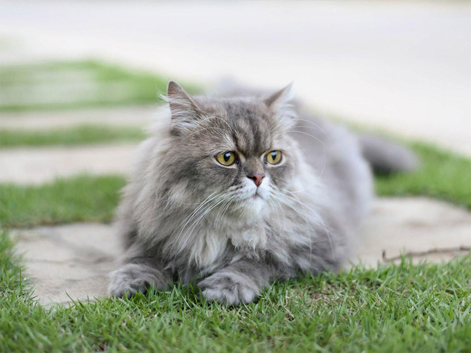
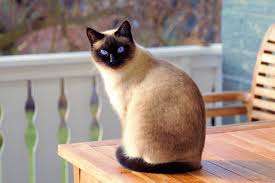
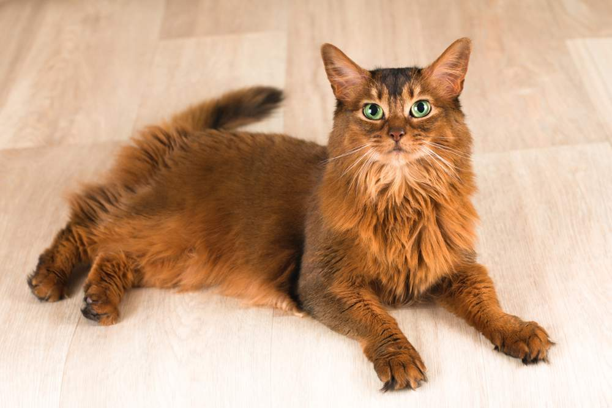
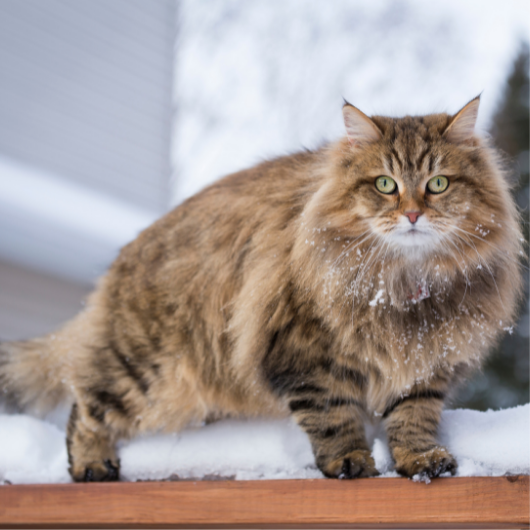
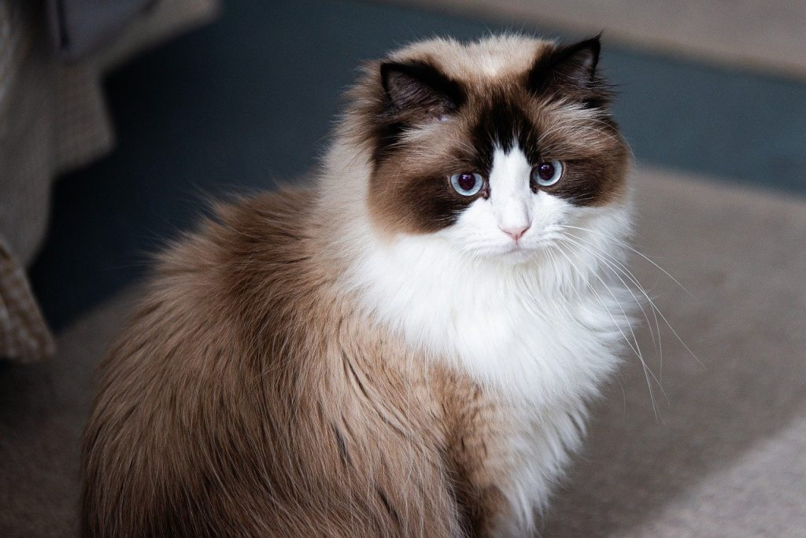

El gato persa es una raza elegante con un pelaje largo y esponjoso.
Los siameses son conocidos por su personalidad vocal y sus ojos azules brillantes.
El gato somalí es una versión de pelo largo del abisinio, muy ágil y juguetón.
El siberiano es una raza fuerte y resistente con un hermoso pelaje denso.
El ragdoll es famoso por su temperamento dócil y su tendencia a relajarse cuando lo sostienen.
